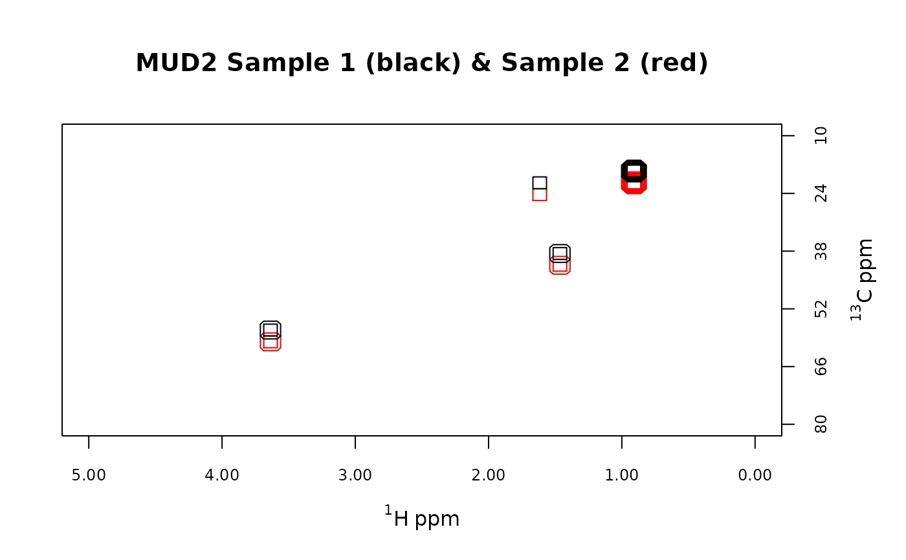
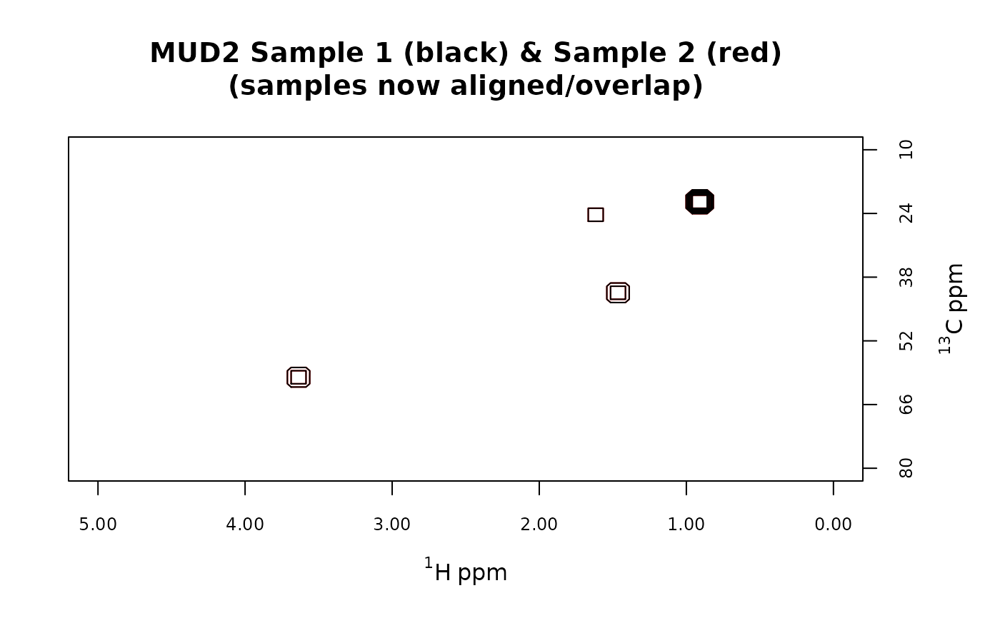

Shift the spectra in a Spectra2D object manually. During shifting, some rows
or columns are thrown away and new rows or columns are introduced. These new entries may
be filled with zeros, or noise from the original spectra.
(+) shiftF2 - shift right: trim right, fill left
(-) shiftF2 - shift left: trim left, fill right
(+) shiftF1 - shift up: trim top, fill bottom
(-) shiftF1 - shift down: trim bottom, fill top
shiftSpectra2D(
spectra,
which = NULL,
shiftF2 = 0L,
shiftF1 = 0L,
fill = "noise"
)An object of S3 class Spectra2D.
An integer specifying which spectra to shift. May be a vector.
Integer. The number of data points to shift along the F2 dimension. See Details.
As per shiftF2, but for the F1 dimension.
Aligning spectra requires that at least some spectra be shifted left/right and up/down. When a spectrum is shifted, spaces are opened that must be filled with something:
If fill = "zeros" the spaces are filled with zeros.
If fill = "noise" the spaces are filled with an estimate of the noise from the
original spectrum.
An object of S3 class Spectra2D.
data(MUD2)
# Show the first two spectra, overlaid
mylvls <- seq(5, 35, 5)
plotSpectra2D(MUD2,
which = 1:2, lvls = LofL(mylvls, 2),
cols = LofC(c("red", "black"), 2, length(mylvls), 2),
main = "MUD2 Sample 1 (black) & Sample 2 (red)"
)

# Now shift Sample 2
MUD2s <- shiftSpectra2D(MUD2, which = 2, shiftF1 = -2)
plotSpectra2D(MUD2s,
which = 1:2, lvls = LofL(mylvls, 2),
cols = LofC(c("red", "black"), 2, length(mylvls), 2),
main = "MUD2 Sample 1 (black) & Sample 2 (red)\n(samples now aligned/overlap)"
)
